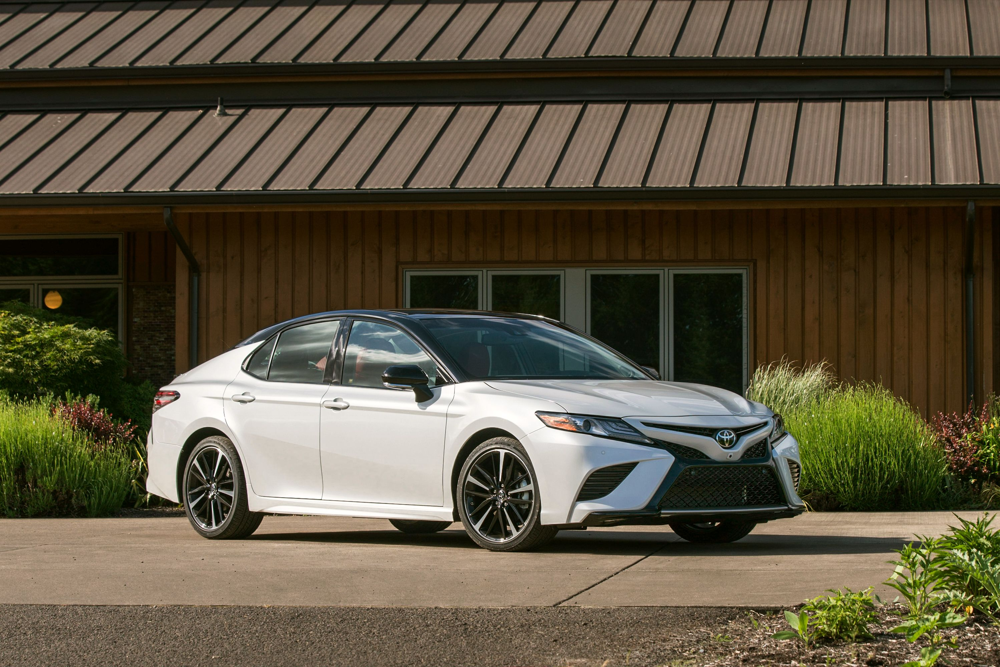
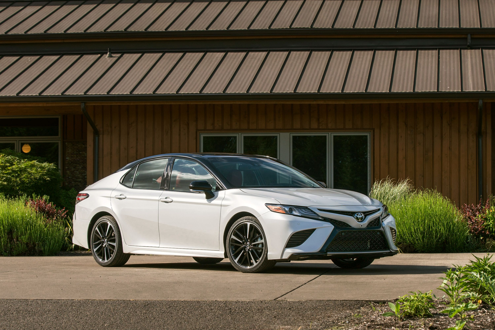

Overview
The Toyota Camry has long been heralded as a benchmark for reliability and comfort in the midsize sedan market. Renowned for its smooth ride and refined interior, the Camry offers a blend of traditional virtues and modern design. Each model features a sleek, aerodynamic silhouette that not only enhances the vehicle's visual appeal but also contributes to its efficient performance. Built on Toyota’s New Global Architecture (TNGA) platform, the Camry boasts improved handling dynamics and increased structural rigidity, which together deliver a more engaging driving experience. With a choice of an efficient four-cylinder engine, a powerful V6, or an eco-friendly hybrid option, the Camry meets a wide range of preferences, ensuring it remains a top choice for families and commuting professionals alike.
Features
The Toyota Camry is packed with advanced features that cater to safety, performance, and comfort, making it a top contender in its class. The vehicle comes equipped with Toyota Safety Sense, a suite of safety technologies including automatic emergency braking, lane departure alert, and adaptive cruise control, all standard across the Camry lineup. Inside, the cabin features high-quality materials and a stylish layout, with available leather upholstery, ambient lighting, and an optional panoramic sunroof enhancing the upscale feel. Technology-wise, the Camry shines with its intuitive touchscreen infotainment system that supports both Apple CarPlay and Android Auto, allowing seamless integration with smartphones. Optional features like a JBL audio system and wireless phone charging add to the convenience and enjoyment of the driving experience. For performance enthusiasts, the Camry’s V6 model offers an exhilarating 301 horsepower, while the hybrid version impresses with its excellent fuel efficiency, demonstrating the Camry’s versatility and appeal to a broad audience.
Gallery

 

Specifications
MPG: Up to a Manufacturer-Estimated 52 MPG Combined Power 301 hp